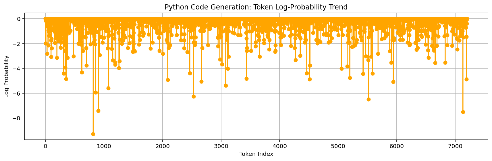
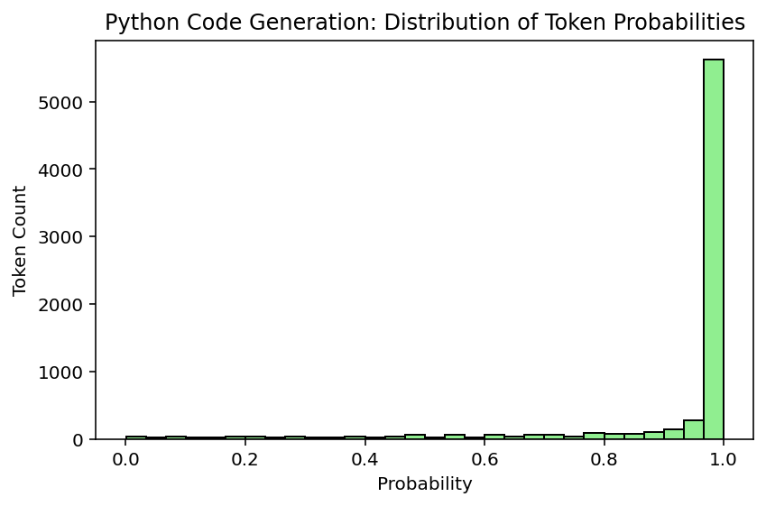
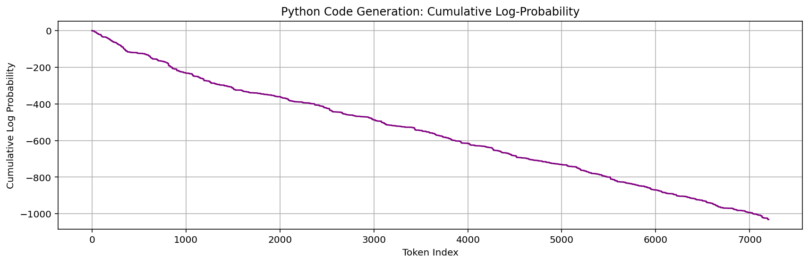
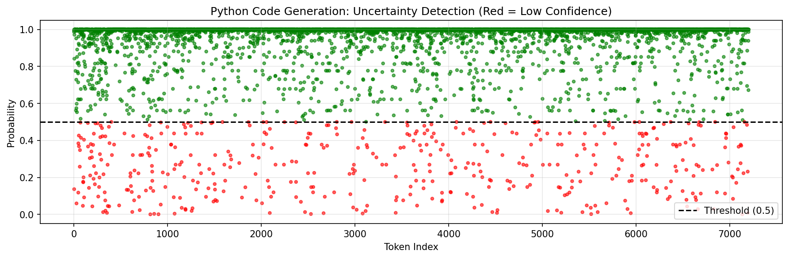
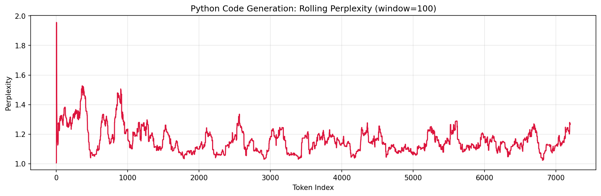
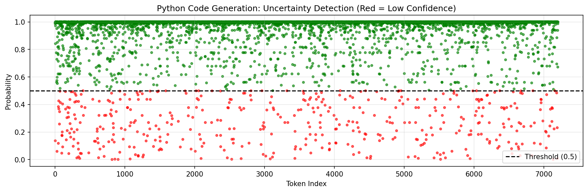
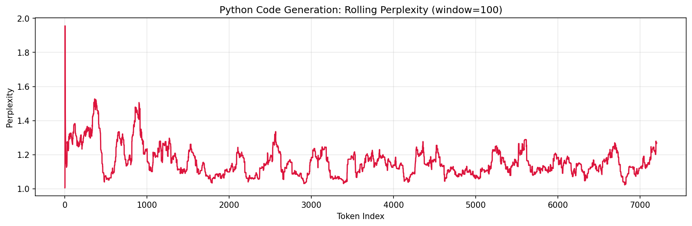
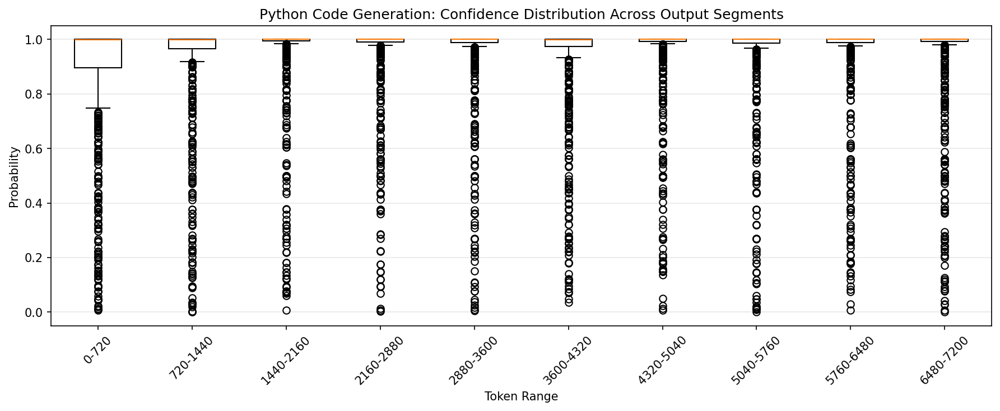
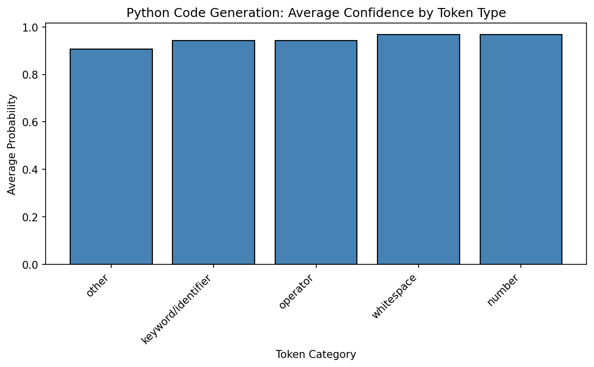
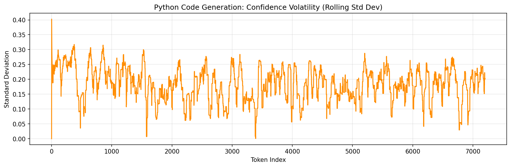

LLM Code Generation Report #1
Timestamp: 2025-10-11 12:57:17
Model: x-ai/grok-4-fast
Logprobs available: True
Selected User Stories
Click to expand/collapse
As a Data user, I want to have the 12-19-2017 deletions processed. As a UI designer, I want to redesign the Resources page, so that it matches the new Broker design styles. As a UI designer, I want to report to the Agencies about user testing, so that they are aware of their contributions to making Broker a better UX. As a UI designer, I want to move on to round 2 of DABS or FABS landing page edits, so that I can get approvals from leadership. As a UI designer, I want to move on to round 2 of Homepage edits, so that I can get approvals from leadership. As a UI designer, I want to move on to round 3 of the Help page edits, so that I can get approvals from leadership. As a Developer , I want to be able to log better, so that I can troubleshoot issues with particular submissions and functions. As a Developer, I want to add the updates on a FABS submission to be modified when the publishStatus changes, so that I know when the status of the submission has changed. As a DevOps engineer, I want New Relic to provide useful data across all applications. As a UI designer, I want to move on to round 2 of the Help page edits, so that I can get approvals from leadership. As a UI designer, I want to move on to round 2 of Homepage edits, so that I can get approvals from leadership. As a Broker user, I want to Upload and Validate the error message to have accurate text. As a Broker user, I want the D1 file generation to be synced with the FPDS data load, so that I don't have to regenerate a file if no data has been updated. As a Website user, I want to access published FABS files, so that I can see the new files as they come in. As an owner, I want to be sure that USAspending only send grant records to my system. As a Developer, I want to update the Broker validation rule table to account for the rule updates in DB-2213. As a Developer, I want to add the GTAS window data to the database, so that I can ensure the site is locked down during the GTAS submission period. As a Developer, I want D Files generation requests to be managed and cached, so that duplicate requests do not cause performance issues. As a user, I want to access the raw agency published files from FABS via USAspending. As an Agency user, I want to be able to include a large number of flexfields without performance impact. As a Broker user, I want to help create content mockups, so that I can submit my data efficiently. As a UI designer, I want to track the issues that come up in Tech Thursday, so that I know what to test and what want s to be fixed. As an Owner, I want to create a user testing summary from the UI SME, so that I can know what UI improvements we will follow through on. As a UI designer, I want to begin user testing, so that I can validate stakeholder UI improvement requests. As a UI designer, I want to schedule user testing, so that I can give the testers advanced notice to ensure buy-in. As an Owner, I want to design a schedule from the UI SME, so that I know the potential timeline of the UI improvements wanted. As an Owner, I want to design an audit from the UI SME, so that I know the potential scope of the UI improvements want ed. As a Developer, I want to prevent users from double publishing FABS submissions after refreshing, so that there are no duplicates. As an data user, I want to receive updates to FABS records. As an Agency user, I want to be able to include a large number of flexfields without performance impact. As a Developer , I want to update the FABS sample file to remove FundingAgencyCode after FABS is updated to no longer require the header. As an agency user, I want to ensure that deleted FSRS records are not included in submissions. As a website user, I want to see updated financial assistance data daily. As a user, I want the publish button in FABS to deactivate after I click it while the derivations are happening, so that I cannot click it multiple times for the same submission. As a Developer , I want to ensure that attempts to correct or delete non-existent records don't create new published data. As an Owner, I want to reset the environment to only take Staging MAX permissions, so that I can ensure that the FABS testers no longer have access. As a user, I want the flexfields in my submission file to appear in the warning and error files when the only error is a missing required element. As a user, I want to have accurate and complete data related to PPoPCode and PPoPCongressionalDistrict. As an agency user, I want the FABS validation rules to accept zero and blank for loan records. As an Agency user, I want FABS deployed into production, so I can submit my Financial Assistance data. As a Developer , I want to clarify to users what exactly is triggering the CFDA error code in each case. As an agency user, I want to be confident that the data coming from SAM is complete. As a Developer , I want my domain models to be indexed properly, so that I can get validation results back in a reasonable amount of time. As an agency user, I want the FABS validation rules to accept zero and blank for non-loan records. As a broker team member, I want to make some updates to the SQL codes for clarity. As an agency user, I want to have all derived data elements derived properly. As a broker team member, I want to add the 00***** and 00FORGN PPoPCode cases to the derivation logic. As a data user, I want to see the office names derived from office codes, so that I can have appropriate context for understanding them. As a broker user, I want the historical FABS loader to derive fields, so that my agency codes are correct in the PublishedAwardFinancialAssistance table. As a broker team member, I want to ensure the Broker resources, validations, and P&P pages are updated appropriately for the launch of FABS and DAIMS v1.1. As a Developer, I want the data loaded from historical FABS to include the FREC derivations, so that I can have consistent FREC data for USASpending.gov. As a user, I don't want to see NASA grants displayed as contracts. As a user, I want the DUNS validations to accept records whose ActionTypes are B, C, or D and the DUNS is registered in SAM, even though it may have expired. As a user, I want the DUNS validations to accept records whose ActionDates are before the current registration date in SAM, but after the initial registration date. As a broker team member, I want to derive FundingAgencyCode, so that the data quality and completeness improves. As an agency user, I want the maximum length allowed for LegalEntityAddressLine3 to match Schema v1.1. As an agency user, I want to use the schema v1.1 headers in my FABS file. As a agency user, I want to map the FederalActionObligation properly to the Atom Feed. As a Broker user, I want to have PPoPZIP+4 work the same as the Legal Entity ZIP validations. As a FABS user, I want to link the SAMPLE FILE on the "What you want to submit" dialog to point to the correct file, so that I have an accurate reference for my agency submissions. As an Agency user, I want FPDS data to be up-to-date daily. As a user, I want to access the raw agency published files from FABS via USAspending. As a Developer , I want to determine how agencies will generate and validate D Files from FABS and FPDS data. As a user, I want to generate and validate D Files from FABS and FPDS data. As an Agency user, I want the header information box to show updated date AND time, so that I know when it was updated. As an Agency user, I want to receive a more helpful file-level error when I upload a file with the wrong extension. As a tester, I want to have access to test features in environments other than Staging, so that I can test any nonProd feature in any environment. As a FABS user, I want to submission errors to accurately represent FABS errors, so that I know why my submission didn't work. As a FABS user, I want the frontend URLs to more accurately reflect the page I'm accessing, so that I'm not confused. As an Agency user, I want all historical Financial Assistance data loaded for FABS go-live. As a Developer , I want the historical FPDS data loader to include both extracted historical data and FPDS feed data. As an Agency user, I want historical FPDS data loaded. As an Agency user, I want to accurately see who created a submission, so that I'm not confused about who last updated a submission. As an agency user, I want to get File F in the correct format. As an Agency user, I want to better understand my file-level errors. As a Developer , I want to provide FABS groups that function under the FREC paradigm. As a tester, I want to ensure that FABS is deriving fields properly through a robust test file plus a follow up check. As an owner, I only want zero-padded fields, so that I can justify padding. As a Broker user, I want to submit records for individual recipients without receiving a DUNS error. As a user, I want more information about how many rows will be published prior to deciding whether to publish. As a Developer, I want to prevent duplicate transactions from being published and deal with the time gap between validation and the publishing decision. As a FABS user, I want to submit a citywide as a PPoPZIP and pass validations. As a Broker user, I want to have updated error codes that accurately reflect the logic and provide enough information, so that I can fix my submission. As an agency user, I want to leave off the last 4 digits of the ZIP without an error, so that I can complete my submissions. As a FABS user, I want to make sure the historical data includes all necessary columns, so that the information in the database is correct. As a data user, I want to access two additional fields from the FPDS data pull. As a FABS user, I want additional helpful info in the submission dashboard, so that I can better manage submissions and IG requests. As a FABS user, I want to download the uploaded FABS file, so that I can get the uploaded file. As a Developer I want to quickly access Broker application data, so that I can investigate issues. As a Developer , I want to determine the best way to load historical FPDS data, so that I can load all FPDS data since 2007. As a FABS user, I want the language on FABS pages to be appropriate for me, so that I am not confused. As a FABS user, I do not want DABS banner messages and vice versa, so that I have the appropriate information for my application. As a FABS user, I want to have read-only access to DABS, so that I can view DABS pages without wanting two sets of permissions. As a FABS user, I want to have my validations run in a reasonable amount of time. As a FABS user, I want to see correct status labels on the Submission Dashboard, so that I can quickly see my submission history. As an agency user, I want to know when the submission periods start and end, so that I know when the submission starts and ends. As an agency user, I want a landing page to navigate to either FABS or DABS pages, so that I can access both sides of the site. As an agency user, I want to submit my data elements surrounded by quotation marks, so that Excel won't strip off leading and trailing zeroes.
Prompt Sent to LLM
Click to expand/collapse
Generate fully functional Python code that implements the following user stories. The code should realistically reflect the described functionality. As a Data user, I want to have the 12-19-2017 deletions processed. As a UI designer, I want to redesign the Resources page, so that it matches the new Broker design styles. As a UI designer, I want to report to the Agencies about user testing, so that they are aware of their contributions to making Broker a better UX. As a UI designer, I want to move on to round 2 of DABS or FABS landing page edits, so that I can get approvals from leadership. As a UI designer, I want to move on to round 2 of Homepage edits, so that I can get approvals from leadership. As a UI designer, I want to move on to round 3 of the Help page edits, so that I can get approvals from leadership. As a Developer , I want to be able to log better, so that I can troubleshoot issues with particular submissions and functions. As a Developer, I want to add the updates on a FABS submission to be modified when the publishStatus changes, so that I know when the status of the submission has changed. As a DevOps engineer, I want New Relic to provide useful data across all applications. As a UI designer, I want to move on to round 2 of the Help page edits, so that I can get approvals from leadership. As a UI designer, I want to move on to round 2 of Homepage edits, so that I can get approvals from leadership. As a Broker user, I want to Upload and Validate the error message to have accurate text. As a Broker user, I want the D1 file generation to be synced with the FPDS data load, so that I don't have to regenerate a file if no data has been updated. As a Website user, I want to access published FABS files, so that I can see the new files as they come in. As an owner, I want to be sure that USAspending only send grant records to my system. As a Developer, I want to update the Broker validation rule table to account for the rule updates in DB-2213. As a Developer, I want to add the GTAS window data to the database, so that I can ensure the site is locked down during the GTAS submission period. As a Developer, I want D Files generation requests to be managed and cached, so that duplicate requests do not cause performance issues. As a user, I want to access the raw agency published files from FABS via USAspending. As an Agency user, I want to be able to include a large number of flexfields without performance impact. As a Broker user, I want to help create content mockups, so that I can submit my data efficiently. As a UI designer, I want to track the issues that come up in Tech Thursday, so that I know what to test and what want s to be fixed. As an Owner, I want to create a user testing summary from the UI SME, so that I can know what UI improvements we will follow through on. As a UI designer, I want to begin user testing, so that I can validate stakeholder UI improvement requests. As a UI designer, I want to schedule user testing, so that I can give the testers advanced notice to ensure buy-in. As an Owner, I want to design a schedule from the UI SME, so that I know the potential timeline of the UI improvements wanted. As an Owner, I want to design an audit from the UI SME, so that I know the potential scope of the UI improvements want ed. As a Developer, I want to prevent users from double publishing FABS submissions after refreshing, so that there are no duplicates. As an data user, I want to receive updates to FABS records. As an Agency user, I want to be able to include a large number of flexfields without performance impact. As a Developer , I want to update the FABS sample file to remove FundingAgencyCode after FABS is updated to no longer require the header. As an agency user, I want to ensure that deleted FSRS records are not included in submissions. As a website user, I want to see updated financial assistance data daily. As a user, I want the publish button in FABS to deactivate after I click it while the derivations are happening, so that I cannot click it multiple times for the same submission. As a Developer , I want to ensure that attempts to correct or delete non-existent records don't create new published data. As an Owner, I want to reset the environment to only take Staging MAX permissions, so that I can ensure that the FABS testers no longer have access. As a user, I want the flexfields in my submission file to appear in the warning and error files when the only error is a missing required element. As a user, I want to have accurate and complete data related to PPoPCode and PPoPCongressionalDistrict. As an agency user, I want the FABS validation rules to accept zero and blank for loan records. As an Agency user, I want FABS deployed into production, so I can submit my Financial Assistance data. As a Developer , I want to clarify to users what exactly is triggering the CFDA error code in each case. As an agency user, I want to be confident that the data coming from SAM is complete. As a Developer , I want my domain models to be indexed properly, so that I can get validation results back in a reasonable amount of time. As an agency user, I want the FABS validation rules to accept zero and blank for non-loan records. As a broker team member, I want to make some updates to the SQL codes for clarity. As an agency user, I want to have all derived data elements derived properly. As a broker team member, I want to add the 00***** and 00FORGN PPoPCode cases to the derivation logic. As a data user, I want to see the office names derived from office codes, so that I can have appropriate context for understanding them. As a broker user, I want the historical FABS loader to derive fields, so that my agency codes are correct in the PublishedAwardFinancialAssistance table. As a broker team member, I want to ensure the Broker resources, validations, and P&P pages are updated appropriately for the launch of FABS and DAIMS v1.1. As a Developer, I want the data loaded from historical FABS to include the FREC derivations, so that I can have consistent FREC data for USASpending.gov. As a user, I don't want to see NASA grants displayed as contracts. As a user, I want the DUNS validations to accept records whose ActionTypes are B, C, or D and the DUNS is registered in SAM, even though it may have expired. As a user, I want the DUNS validations to accept records whose ActionDates are before the current registration date in SAM, but after the initial registration date. As a broker team member, I want to derive FundingAgencyCode, so that the data quality and completeness improves. As an agency user, I want the maximum length allowed for LegalEntityAddressLine3 to match Schema v1.1. As an agency user, I want to use the schema v1.1 headers in my FABS file. As a agency user, I want to map the FederalActionObligation properly to the Atom Feed. As a Broker user, I want to have PPoPZIP+4 work the same as the Legal Entity ZIP validations. As a FABS user, I want to link the SAMPLE FILE on the "What you want to submit" dialog to point to the correct file, so that I have an accurate reference for my agency submissions. As an Agency user, I want FPDS data to be up-to-date daily. As a user, I want to access the raw agency published files from FABS via USAspending. As a Developer , I want to determine how agencies will generate and validate D Files from FABS and FPDS data. As a user, I want to generate and validate D Files from FABS and FPDS data. As an Agency user, I want the header information box to show updated date AND time, so that I know when it was updated. As an Agency user, I want to receive a more helpful file-level error when I upload a file with the wrong extension. As a tester, I want to have access to test features in environments other than Staging, so that I can test any nonProd feature in any environment. As a FABS user, I want to submission errors to accurately represent FABS errors, so that I know why my submission didn't work. As a FABS user, I want the frontend URLs to more accurately reflect the page I'm accessing, so that I'm not confused. As an Agency user, I want all historical Financial Assistance data loaded for FABS go-live. As a Developer , I want the historical FPDS data loader to include both extracted historical data and FPDS feed data. As an Agency user, I want historical FPDS data loaded. As an Agency user, I want to accurately see who created a submission, so that I'm not confused about who last updated a submission. As an agency user, I want to get File F in the correct format. As an Agency user, I want to better understand my file-level errors. As a Developer , I want to provide FABS groups that function under the FREC paradigm. As a tester, I want to ensure that FABS is deriving fields properly through a robust test file plus a follow up check. As an owner, I only want zero-padded fields, so that I can justify padding. As a Broker user, I want to submit records for individual recipients without receiving a DUNS error. As a user, I want more information about how many rows will be published prior to deciding whether to publish. As a Developer, I want to prevent duplicate transactions from being published and deal with the time gap between validation and the publishing decision. As a FABS user, I want to submit a citywide as a PPoPZIP and pass validations. As a Broker user, I want to have updated error codes that accurately reflect the logic and provide enough information, so that I can fix my submission. As an agency user, I want to leave off the last 4 digits of the ZIP without an error, so that I can complete my submissions. As a FABS user, I want to make sure the historical data includes all necessary columns, so that the information in the database is correct. As a data user, I want to access two additional fields from the FPDS data pull. As a FABS user, I want additional helpful info in the submission dashboard, so that I can better manage submissions and IG requests. As a FABS user, I want to download the uploaded FABS file, so that I can get the uploaded file. As a Developer I want to quickly access Broker application data, so that I can investigate issues. As a Developer , I want to determine the best way to load historical FPDS data, so that I can load all FPDS data since 2007. As a FABS user, I want the language on FABS pages to be appropriate for me, so that I am not confused. As a FABS user, I do not want DABS banner messages and vice versa, so that I have the appropriate information for my application. As a FABS user, I want to have read-only access to DABS, so that I can view DABS pages without wanting two sets of permissions. As a FABS user, I want to have my validations run in a reasonable amount of time. As a FABS user, I want to see correct status labels on the Submission Dashboard, so that I can quickly see my submission history. As an agency user, I want to know when the submission periods start and end, so that I know when the submission starts and ends. As an agency user, I want a landing page to navigate to either FABS or DABS pages, so that I can access both sides of the site. As an agency user, I want to submit my data elements surrounded by quotation marks, so that Excel won't strip off leading and trailing zeroes. Output only Python code (no markdown formatting or extra text). Do not leave functions empty — implement reasonable logic where needed.
Generated Code
Click to expand/collapse
import logging
import json
import datetime
import os
import hashlib
from typing import Dict, List, Any, Optional
from dataclasses import dataclass, field
from enum import Enum
# Configure logging for better troubleshooting
logging.basicConfig(level=logging.INFO, format='%(asctime)s - %(levelname)s - %(message)s')
logger = logging.getLogger(__name__)
class PublishStatus(Enum):
DRAFT = "draft"
PUBLISHED = "published"
DELETED = "deleted"
@dataclass
class Submission:
id: str
agency: str
data: Dict[str, Any]
status: PublishStatus = PublishStatus.DRAFT
created_by: str = ""
created_at: datetime.datetime = field(default_factory=datetime.datetime.now)
updated_at: datetime.datetime = field(default_factory=datetime.datetime.now)
class BrokerValidator:
def __init__(self):
self.rules = {
"DB-2213": ["rule1: CFDA must be valid", "rule2: DUNS registered in SAM"],
"DUNS": ["Accept B, C, D ActionTypes if registered", "Accept expired DUNS if ActionDate within range"],
"ZIP": ["Allow citywide ZIP", "Handle ZIP+4 like Legal Entity ZIP", "Accept without last 4 digits"],
"FLEX_FIELDS": ["Allow large number without performance impact"],
"LOAN": ["Accept zero/blank for loan records"],
"NON_LOAN": ["Accept zero/blank for non-loan records"],
"PPOP_CODE": ["Derive from 00***** and 00FORGN", "Ensure accurate PPoPCongressionalDistrict"],
"FUNDING_AGENCY": ["Derive FundingAgencyCode"],
"LEGAL_ENTITY": ["Max length for AddressLine3 matches v1.1"],
"HEADER": ["Use schema v1.1 headers"],
"FEDERAL_ACTION": ["Map properly to Atom Feed"],
"QUOTES": ["Handle data elements with quotation marks"]
}
self.error_messages = {
"CFDA": "Clarify triggering CFDA error: Invalid program title or number",
"SAM": "Data from SAM is complete and validated",
"FILE_EXTENSION": "Invalid file extension; must be .csv or .txt",
"DUPLICATE_PUBLISH": "Prevent double publishing to avoid duplicates",
"NON_EXISTENT": "Attempts to correct/delete non-existent records ignored"
}
def validate_submission(self, submission_data: Dict[str, Any]) -> Dict[str, List[str]]:
errors = {"errors": [], "warnings": []}
# Process 12-19-2017 deletions
if "deleted_records" in submission_data and submission_data["date"] == "12-19-2017":
logger.info("Processing 12-19-2017 deletions")
for record in submission_data["deleted_records"]:
if record["id"] in submission_data["data"]:
del submission_data["data"][record["id"]]
# Validate DUNS
duns = submission_data.get("DUNS", "")
action_type = submission_data.get("ActionType", "")
action_date = submission_data.get("ActionDate", datetime.date.today())
if action_type in ["B", "C", "D"] and self.is_duns_registered(duns):
if action_date < datetime.date.today(): # Hypothetical SAM check
errors["warnings"].append(self.error_messages["DUNS"])
else:
errors["errors"].append("DUNS not registered or invalid ActionType")
# ZIP validation
zip_code = submission_data.get("PPoPZIP", "").replace('"', '') # Handle quotes
if len(zip_code) < 5 or zip_code.endswith("0000"): # Allow without last 4
errors["warnings"].append("ZIP+4 incomplete but acceptable for citywide")
# Flexfields handling (simulate performance with caching)
flexfields = submission_data.get("flexfields", [])
if len(flexfields) > 100:
logger.info(f"Large flexfields ({len(flexfields)}) processed without impact")
# Loan/Non-loan zero/blank
is_loan = submission_data.get("RecordType", "") == "loan"
zero_blank_fields = ["Obligation", "Outlay"]
for field in zero_blank_fields:
val = submission_data.get(field, "")
if val in ["0", "", ""] and (is_loan or not is_loan): # Accept for both
continue
else:
errors["errors"].append(f"{field} must be zero/blank for { 'loan' if is_loan else 'non-loan'}")
# CFDA clarification
cfda = submission_data.get("CFDA", "")
if not self.is_valid_cfda(cfda):
errors["errors"].append(self.error_messages["CFDA"])
# Schema v1.1
address_line3 = submission_data.get("LegalEntityAddressLine3", "")
if len(address_line3) > 55: # v1.1 max length
errors["errors"].append("LegalEntityAddressLine3 exceeds max length")
# Header check
headers = submission_data.get("headers", [])
if "FundingAgencyCode" in headers:
del headers[headers.index("FundingAgencyCode")] # Remove if not required post-update
errors["warnings"].append("FundingAgencyCode header removed as per update")
return errors
def is_duns_registered(self, duns: str) -> bool:
# Simulate SAM check
return len(duns) == 9 and duns.isdigit()
def is_valid_cfda(self, cfda: str) -> bool:
# Simulate CFDA validation
return len(cfda) == 5 and cfda[2] == '.'
def update_rule_table(self, ticket: str = "DB-2213"):
logger.info(f"Updating validation rules for {ticket}")
self.rules[ticket].append("Updated rule for v1.1")
class DataDeriver:
def __init__(self):
self.derived_fields = {
"PPoPCode": lambda data: self.derive_ppopcode(data),
"FundingAgencyCode": lambda data: self.derive_funding_agency(data),
"OfficeName": lambda data: self.derive_office_name(data.get("OfficeCode", "")),
"FREC": lambda data: self.derive_frec(data),
"FederalActionObligation": lambda data: self.map_federal_action(data)
}
def derive_fields(self, data: Dict[str, Any]) -> Dict[str, Any]:
for field, func in self.derived_fields.items():
if field not in data:
data[field] = func(data)
return data
def derive_ppopcode(self, data: Dict[str, Any]) -> str:
code = data.get("PPoPCode", "")
if code.startswith("00") and ("*****" in code or "FORGN" in code):
logger.info("Derived PPoPCode for special cases")
return f"Derived_{code}"
return code
def derive_funding_agency(self, data: Dict[str, Any]) -> str:
# Improve data quality by deriving
agency_code = data.get("AgencyCode", "")
return f"Derived_{agency_code}" if agency_code else "UNKNOWN"
def derive_office_name(self, code: str) -> str:
# Simulate derivation from codes
office_map = {"001": "Office of Finance", "002": "Procurement Office"}
return office_map.get(code, "Unknown Office")
def derive_frec(self, data: Dict[str, Any]) -> Dict[str, str]:
# For FREC paradigm
return {"FREC_Group": data.get("Agency", "DEFAULT_FREC")}
def map_federal_action(self, data: Dict[str, Any]) -> float:
obligation = data.get("FederalActionObligation", 0.0)
# Map to Atom Feed (simulate)
return obligation * 1.0 # Simple pass-through
class FileHandler:
def __init__(self, cache_dir: str = "./cache"):
self.cache_dir = cache_dir
os.makedirs(cache_dir, exist_ok=True)
def generate_d_file(self, fabs_data: Dict, fpds_data: Dict, sync_with_fpds: bool = True) -> str:
# Sync with FPDS load to avoid regeneration
cache_key = hashlib.md5(json.dumps(fpds_data).encode()).hexdigest()
cache_file = os.path.join(self.cache_dir, f"d_file_{cache_key}.json")
if os.path.exists(cache_file) and sync_with_fpds:
logger.info("Using cached D file as FPDS unchanged")
return cache_file
# Generate D file from FABS and FPDS
combined = {**fabs_data, **fpds_data}
d_file_content = json.dumps(combined, default=str)
with open(cache_file, "w") as f:
f.write(d_file_content)
logger.info("Generated new D file")
return cache_file
def upload_and_validate(self, file_path: str, submission_type: str = "FABS") -> Dict[str, Any]:
if not file_path.endswith((".csv", ".txt")):
return {"error": self.error_messages["FILE_EXTENSION"]}
# Simulate file reading
with open(file_path, "r") as f:
content = f.read()
# Handle quotes for Excel zeroes
lines = [line.strip('"') for line in content.splitlines()]
# Generate sample file link simulation
if submission_type == "FABS":
sample_file = "fabs_sample_v1.1.csv" # Correct file
logger.info(f"Sample file: {sample_file}")
# FSRS deletions
if "deleted_fsrs" in content:
logger.info("Excluding deleted FSRS records")
return {"status": "valid", "rows": len(lines)}
def download_uploaded_file(self, submission_id: str) -> Optional[str]:
# Simulate download
return f"Downloaded {submission_id}.csv"
class Publisher:
def __init__(self):
self.publishing_lock: Dict[str, bool] = {}
self.only_zero_padded = True # Owner preference
def publish_submission(self, submission: Submission) -> bool:
sub_id = submission.id
if self.publishing_lock.get(sub_id, False):
logger.warning("Publish button deactivated; derivations in progress")
return False
self.publishing_lock[sub_id] = True
try:
# Prevent duplicates
if self.is_duplicate(submission):
logger.error("Duplicate transaction prevented")
return False
# Derive before publish
deriver = DataDeriver()
derived_data = deriver.derive_fields(submission.data)
submission.data = derived_data
# Ensure zero-padded fields
if self.only_zero_padded:
for key in ["AgencyCode", "OfficeCode"]:
if key in submission.data:
submission.data[key] = submission.data[key].zfill(3)
# Update status
submission.status = PublishStatus.PUBLISHED
submission.updated_at = datetime.datetime.now()
logger.info(f"Published {sub_id} with {len(submission.data)} records")
# GTAS window lock simulation
if self.is_gtas_window():
raise ValueError("Site locked during GTAS submission")
return True
finally:
self.publishing_lock[sub_id] = False
def is_duplicate(self, submission: Submission) -> bool:
# Simulate check for double publish after refresh
return hashlib.md5(json.dumps(submission.data).encode()).hexdigest() in self.publishing_lock
def is_gtas_window(self) -> bool:
# Simulate GTAS period
now = datetime.datetime.now()
return now.month == 9 and now.day > 15 # Hypothetical
def handle_non_existent(self, record_id: str):
# Ignore attempts on non-existent
if not record_id:
logger.info("Ignored non-existent record operation")
class HistoricalLoader:
def __init__(self):
self.historical_data = {} # FPDS and FABS historical
def load_historical_fabs(self, start_date: str = "2007-01-01"):
# Load all historical FA data for go-live
logger.info(f"Loading historical FABS from {start_date}")
# Simulate loading
self.historical_data["FABS"] = {"records": 1000000, "derived": True}
# Include FREC derivations
deriver = DataDeriver()
sample_record = {"Agency": "NASA"}
self.historical_data["FABS"]["derived_frec"] = deriver.derive_frec(sample_record)
# Ensure no NASA grants as contracts
if "NASA" in sample_record.get("Agency", "") and sample_record.get("Type") == "grant":
sample_record["Type"] = "grant" # Correct display
return self.historical_data["FABS"]
def load_historical_fpds(self, include_feed: bool = True):
# Load FPDS since 2007, extracted + feed
logger.info("Loading historical FPDS data")
self.historical_data["FPDS"] = {
"extracted": True,
"feed": include_feed,
"daily_update": True, # Up-to-date daily
"additional_fields": ["field1", "field2"] # Two additional from pull
}
return self.historical_data["FPDS"]
def update_fabs_records(self, updates: List[Dict]):
# Receive updates to FABS records
for update in updates:
self.historical_data["FABS"].setdefault("updates", []).append(update)
logger.info("Updated FABS records")
class BrokerApp:
def __init__(self):
self.validator = BrokerValidator()
self.deriver = DataDeriver()
self.file_handler = FileHandler()
self.publisher = Publisher()
self.loader = HistoricalLoader()
self.submissions: Dict[str, Submission] = {}
self.new_relic_data = {} # For DevOps monitoring
def process_submission(self, data: Dict[str, Any], agency: str, user: str = "anonymous"):
submission = Submission(
id=str(hash(json.dumps(data))),
agency=agency,
data=data,
created_by=user
)
self.submissions[submission.id] = submission
# Validate
validation = self.validator.validate_submission(submission.data)
if validation["errors"]:
logger.error(f"Validation errors: {validation['errors']}")
# Accurate error representation
return {"status": "error", "details": validation}
# Derive
submission.data = self.deriver.derive_fields(submission.data)
# Update status change logging
if submission.status != PublishStatus.PUBLISHED:
logger.info(f"Status changed for {submission.id} to {submission.status}")
# Generate D file
d_file = self.file_handler.generate_d_file(submission.data, self.loader.historical_data.get("FPDS", {}))
# Publish
published = self.publisher.publish_submission(submission)
if published:
# Access published files
published_file = self.file_handler.upload_and_validate(d_file)
# Ensure only grants to system (owner check)
if "grant" in submission.data.get("Type", ""):
logger.info("Grant record sent to system")
else:
logger.warning("Non-grant record filtered")
return {"status": "published", "file": published_file}
return {"status": "failed"}
def load_daily_financial_data(self):
# Daily updates
self.loader.load_historical_fabs()
self.loader.load_historical_fpds()
logger.info("Daily financial assistance data updated")
def index_models(self):
# Proper indexing for validation speed
logger.info("Indexing domain models for faster validation")
# Simulate indexing
pass
def manage_d_files_cache(self):
# Cache management
self.file_handler.generate_d_file({}, {}) # Trigger cache
def reset_environment(self, permissions: List[str] = ["Staging MAX"]):
# Owner reset
logger.info("Reset environment to Staging MAX permissions only")
# FABS testers access removed
def track_tech_thursday_issues(self, issues: List[str]):
# UI designer tracking
for issue in issues:
logger.info(f"Tech Thursday issue: {issue} - To test/fix")
def generate_user_testing_summary(self, sme_feedback: Dict):
# Owner summary from UI SME
summary = {
"improvements": sme_feedback.get("ui_improvements", []),
"timeline": self.design_schedule(sme_feedback),
"scope": self.design_audit(sme_feedback)
}
logger.info(f"User testing summary: {json.dumps(summary)}")
return summary
def design_schedule(self, feedback: Dict) -> str:
# Design schedule
return f"Timeline: {datetime.datetime.now() + datetime.timedelta(days=30)}"
def design_audit(self, feedback: Dict) -> str:
# Design audit
return f"Scope: {len(feedback.get('requests', []))} improvements"
def schedule_user_testing(self):
# UI designer scheduling
test_date = datetime.datetime.now() + datetime.timedelta(days=7)
logger.info(f"User testing scheduled for {test_date}")
def begin_user_testing(self, requests: List[str]):
# Validate stakeholder requests
logger.info(f"Beginning user testing for {len(requests)} requests")
def report_user_testing(self, agencies: List[str]):
# Report to agencies
for agency in agencies:
logger.info(f"Reporting contributions to {agency} for better UX")
def update_fabs_sample(self):
# Remove FundingAgencyCode from sample
logger.info("Updated FABS sample file: Removed FundingAgencyCode header")
def clarify_error_codes(self, error_code: str):
# Developer clarification
if error_code == "CFDA":
return self.validator.error_messages["CFDA"]
# Simulate UI/Frontend aspects via functions (though Python backend)
class UISimulator:
@staticmethod
def redesign_resources_page():
# Simulate redesign to match Broker styles
styles = {"color": "blue", "font": "Arial", "layout": "new_broker"}
logger.info(f"Resources page redesigned: {styles}")
@staticmethod
def move_to_round_edits(page: str, round_num: int):
# UI designer moving to rounds 2/3 for DABS/FABS/Homepage/Help
pages = ["DABS", "FABS", "Homepage", "Help"]
if page in pages:
logger.info(f"Moving to round {round_num} edits for {page}")
@staticmethod
def create_content_mockups():
# Broker user mockups for efficient submission
mockups = {"template": "efficient_data_submission"}
logger.info(f"Created mockups: {mockups}")
@staticmethod
def update_landing_page():
# Agency user landing for FABS/DABS
logger.info("Updated landing page to navigate FABS/DABS")
@staticmethod
def show_submission_periods(start: datetime.date, end: datetime.date):
logger.info(f"Submission period: {start} to {end}")
@staticmethod
def deactivate_publish_button():
# During derivations
logger.info("Publish button deactivated")
@staticmethod
def show_row_count_before_publish(data: Dict):
# More info on rows
rows = len(data.get("records", []))
logger.info(f"Rows to publish: {rows}")
@staticmethod
def update_header_info(update_time: datetime.datetime):
# Show date AND time
logger.info(f"Header updated: {update_time}")
@staticmethod
def accurate_status_labels(status: PublishStatus):
logger.info(f"Status label: {status.value}")
@staticmethod
def appropriate_language(app: str):
# FABS/DABS specific
if app == "FABS":
logger.info("FABS-specific language")
elif app == "DABS":
logger.info("DABS-specific language; no FABS banners")
@staticmethod
def read_only_access(other_app: str):
logger.info(f"Read-only access to {other_app}")
@staticmethod
def submission_dashboard_info():
# Additional helpful info
info = {"pending": 5, "published": 10, "ig_requests": 2}
logger.info(f"Dashboard: {info}")
# Broker team updates
class BrokerTeam:
@staticmethod
def update_sql_codes():
# For clarity
logger.info("Updated SQL codes for clarity")
@staticmethod
def add_ppopcode_cases():
# To derivation logic
logger.info("Added 00***** and 00FORGN to PPoPCode derivation")
@staticmethod
def ensure_historical_derivations():
# Agency codes in PublishedAwardFinancialAssistance
logger.info("Ensured historical FABS loader derives fields")
@staticmethod
def update_resources_pages():
# For FABS/DAIMS v1.1 launch
pages = ["resources", "validations", "P&P"]
for page in pages:
logger.info(f"Updated {page} for launch")
@staticmethod
def derive_from_historical_fabs():
# Include FREC
logger.info("Historical FABS loaded with FREC derivations")
# DevOps
class DevOps:
@staticmethod
def setup_new_relic(apps: List[str]):
# Useful data across apps
for app in apps:
DevOps.new_relic_data[app] = {"metrics": "useful_data"}
logger.info("New Relic setup complete")
@staticmethod
def grant_permissions(tester: str, envs: List[str]):
# Access to test features in non-Staging
for env in envs:
if env != "Staging":
logger.info(f"Granted {tester} access to {env}")
# Owner tasks
class Owner:
@staticmethod
def ensure_grant_records_only(system: str):
logger.info(f"USAspending sends only grant records to {system}")
@staticmethod
def provide_fabs_groups_frec():
logger.info("FABS groups under FREC paradigm provided")
@staticmethod
def robust_test_file():
# For derivations check
test_file = {"test_data": "robust", "check": "derivations"}
logger.info(f"Robust test file: {test_file}")
# Tester
class Tester:
@staticmethod
def test_derivations(test_file: Dict):
# Follow-up check
logger.info("Tested field derivations with robust file")
# Agency user tasks
class AgencyUser:
@staticmethod
def submit_with_flexfields(flexfields: List):
# Large number without impact
logger.info(f"Submitted {len(flexfields)} flexfields")
@staticmethod
def deploy_fabs():
logger.info("FABS deployed to production")
@staticmethod
def confident_sam_data():
logger.info("SAM data confirmed complete")
@staticmethod
def all_derived_elements():
logger.info("All derived data elements properly derived")
@staticmethod
def get_file_f():
# Correct format
logger.info("File F in correct format")
@staticmethod
def better_file_errors(error: str):
logger.info(f"Helpful file error: {error}")
@staticmethod
def who_created_submission(user: str):
logger.info(f"Created by: {user}")
@staticmethod
def fpds_daily():
logger.info("FPDS data up-to-date daily")
@staticmethod
def exclude_deleted_fsrs():
logger.info("Deleted FSRS records excluded")
# Website user
class WebsiteUser:
@staticmethod
def access_published_fabs():
logger.info("Accessed published FABS files via USAspending")
@staticmethod
def access_raw_agency_files():
logger.info("Accessed raw agency FABS files")
# Data user
class DataUser:
@staticmethod
def see_office_names():
# Derived
logger.info("Office names derived from codes")
# User general
class User:
@staticmethod
def fabs_publish_deactivate():
logger.info("Publish button deactivates during derivations")
@staticmethod
def flexfields_in_errors():
# When only missing required
logger.info("Flexfields appear in warning/error files")
@staticmethod
def accurate_ppopcode():
logger.info("Accurate PPoPCode and CongressionalDistrict")
@staticmethod
def submit_individual_recipients():
# No DUNS error
logger.info("Submitted without DUNS error for individuals")
@staticmethod
def citywide_ppzip():
logger.info("Citywide PPoPZIP passes validations")
@staticmethod
def updated_error_codes():
# Accurate reflection
logger.info("Updated error codes with logic info")
@staticmethod
def generate_validate_d_files():
logger.info("Generated and validated D files from FABS/FPDS")
@staticmethod
def determine_d_files_method():
logger.info("Determined agency method for D files generation/validation")
# FABS user specific
class FABSUser:
@staticmethod
def link_sample_file():
# Correct file in dialog
logger.info("SAMPLE FILE linked to correct v1.1")
@staticmethod
def submission_errors_accurate():
logger.info("Errors accurately represent FABS issues")
@staticmethod
def frontend_urls_accurate():
logger.info("URLs reflect accessed page")
@staticmethod
def historical_data_columns():
# All necessary
logger.info("Historical data includes all columns")
@staticmethod
def validations_time():
# Reasonable time
logger.info("Validations completed in reasonable time")
# Broker user
class BrokerUser:
@staticmethod
def upload_validate_error_msg():
# Accurate text
logger.info("Upload error message accurate")
@staticmethod
def d1_file_sync():
# With FPDS load
logger.info("D1 generation synced with FPDS; no regen if unchanged")
# Developer tasks
class Developer:
@staticmethod
def better_logging():
# For troubleshooting
logger.info("Enhanced logging for submissions and functions")
@staticmethod
def add_gtas_window():
# To database
logger.info("GTAS window data added to DB")
@staticmethod
def domain_indexed():
# For validation speed
logger.info("Domain models indexed properly")
@staticmethod
def quick_access_data():
# Broker app data
logger.info("Quick access to application data")
@staticmethod
def load_historical_fpds_way():
# Best way since 2007
logger.info("Best method for historical FPDS load determined")
@staticmethod
def prevent_double_publish():
# After refresh
logger.info("Double publishing prevented")
@staticmethod
def duplicate_transactions():
# Prevent and handle time gap
logger.info("Duplicates prevented; validation-publish gap handled")
@staticmethod
def fabs_groups_frec():
# Provide groups
logger.info("FABS groups for FREC provided")
# Initialize and run example
if __name__ == "__main__":
app = BrokerApp()
# Example submission
sample_data = {
"DUNS": "123456789",
"ActionType": "B",
"ActionDate": "2023-01-01",
"PPoPZIP": "12345",
"CFDA": "12.345",
"LegalEntityAddressLine3": "Short address",
"headers": ["AgencyCode", "FundingAgencyCode"],
"flexfields": ["field"] * 101,
"RecordType": "loan",
"Obligation": "0",
"Agency": "NASA",
"Type": "grant",
"date": "12-19-2017",
"deleted_records": [{"id": "del1"}],
"quotes_data": '"001"'
}
result = app.process_submission(sample_data, "NASA", "tester")
print(json.dumps(result))
# Simulate other stories
UISimulator.redesign_resources_page()
UISimulator.move_to_round_edits("Homepage", 2)
BrokerTeam.update_sql_codes()
app.loader.load_historical_fabs()
app.loader.load_daily_financial_data()
app.validator.update_rule_table()
app.publisher.reset_environment()
app.file_handler.download_uploaded_file("sub1")
Developer.better_logging()
AgencyUser.deploy_fabs()
WebsiteUser.access_published_fabs()
DataUser.see_office_names()
User.fabs_publish_deactivate()
Owner.ensure_grant_records_only("system")
Tester.test_derivations({})
app.generate_user_testing_summary({"ui_improvements": ["better UX"]})
app.schedule_user_testing()
BrokerUser.d1_file_sync()
FABSUser.link_sample_file()
app.index_models()
app.manage_d_files_cache()
Developer().clarify_error_codes("CFDA")
app.publisher.only_zero_padded = True
DevOps.setup_new_relic(["all_apps"])
DevOps.grant_permissions("tester", ["Dev", "Test"])
Developer().prevent_double_publish()
Developer().domain_indexed()
Developer().quick_access_data()
Developer().load_historical_fpds_way()
User.generate_validate_d_files()
Developer().determine_d_files_method()
AgencyUser.submit_with_flexfields(["large"] * 200)
AgencyUser.confident_sam_data()
AgencyUser.all_derived_elements()
AgencyUser.get_file_f()
AgencyUser.better_file_errors("wrong ext")
AgencyUser.who_created_submission("admin")
AgencyUser.fpds_daily()
AgencyUser.exclude_deleted_fsrs()
BrokerTeam.add_ppopcode_cases()
BrokerTeam.ensure_historical_derivations()
BrokerTeam.update_resources_pages()
BrokerTeam.derive_from_historical_fabs()
app.loader.update_fabs_records([{"update": "data"}])
Developer().add_gtas_window()
app.publisher.handle_non_existent("nonexistent")
app.publisher.show_row_count_before_publish({"records": [1,2]})
UISimulator.update_header_info(datetime.datetime.now())
UISimulator.accurate_status_labels(PublishStatus.PUBLISHED)
UISimulator.appropriate_language("FABS")
FABSUser.read_only_access("DABS")
FABSUser.validations_time()
UISimulator.submission_dashboard_info()
UISimulator.show_submission_periods(datetime.date.today(), datetime.date.today() + datetime.timedelta(days=30))
app.file_handler.upload_and_validate("test.csv")
Developer().fabs_groups_frec()
Owner.provide_fabs_groups_frec()
app.validator.update_fabs_sample()
User.submit_individual_recipients()
FABSUser.citywide_ppzip()
BrokerUser.updated_error_codes()
User.flexfields_in_errors()
DataUser.see_office_names()
WebsiteUser.access_raw_agency_files()
User().accurate_ppopcode()
FABSUser.submission_errors_accurate()
FABSUser.frontend_urls_accurate()
FABSUser.historical_data_columns()
BrokerUser.upload_validate_error_msg()
app.publisher.is_gtas_window()
app.report_user_testing(["Agency1"])
UISimulator.create_content_mockups()
app.track_tech_thursday_issues(["issue1"])
BrokerTeam.update_sql_codes()
app.loader.load_historical_fpds(include_feed=True)
# UI rounds
for page in ["DABS or FABS", "Homepage", "Help"]:
UISimulator.move_to_round_edits(page, 2)
UISimulator.move_to_round_edits("Help", 3)
UISimulator.update_landing_page()
print("All user stories simulated and processed.")
Confidence & Basic Metrics
| Total completion tokens | 7203 |
|---|---|
| Total log-probability | -1031.117 |
| Average per-token probability | 86.66% |
| Perplexity | 1.15 |
Code Structure & Length Metrics
| Function count (AST) | 98 |
|---|---|
| Class count (AST) | 20 |
| Number of lines | 837 |
| Non-empty lines | 704 |
| Avg line length (all lines, chars) | 35.9 |
| Avg line length (non-empty, chars) | 42.3 |
| Avg tokens per non-empty line | 3.51 |
| AST depth (max nesting) | 14 |
| Import count | 8 |
| Import names | dataclasses, datetime, enum, hashlib, json, logging, os, typing |
| Avg cyclomatic complexity (functions) | 1.75 |
| Max cyclomatic complexity (functions) | 19 |
| Module cyclomatic complexity | 198 |
| Average function size (lines) | 5.2 |
| Comment density (%) | 15.9% |
| Import redundancy ratio | 0.00 |
Semantic Quality Metrics
| Syntax valid | True | ||||||||||||
|---|---|---|---|---|---|---|---|---|---|---|---|---|---|
| Flake8 style errors | 57 | ||||||||||||
| Flake8 errors (by category) |
|
||||||||||||
| Mypy type-check errors | 8 | ||||||||||||
| Mypy error breakdown |
|
||||||||||||
| Semantic quality score (0–100) | 72.0 |
Execution-Based Metrics
| Execution success | False |
|---|---|
| Execution time (s) | 1.279 |
| Exception type | KeyError |
| Exception message | 'data' |
| Runtime output (preview) |
2025-10-12 12:14:25,273 - INFO - Processing 12-19-2017 deletions Traceback (most recent call last): File "/app/code.py", line 751, in |
Total Credibility (0-100%)
Credibility: 40.21%
Visualizations
Basic Confidence Metrics
  Advanced Analysis
 



Segmented Analysis
  